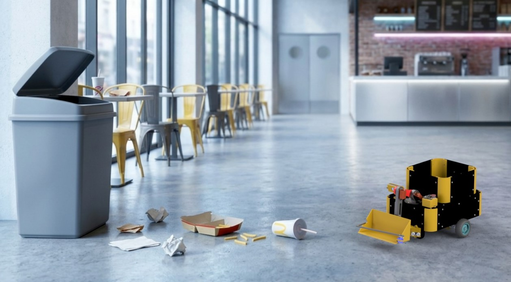
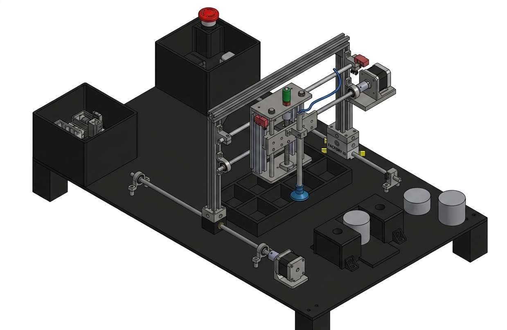
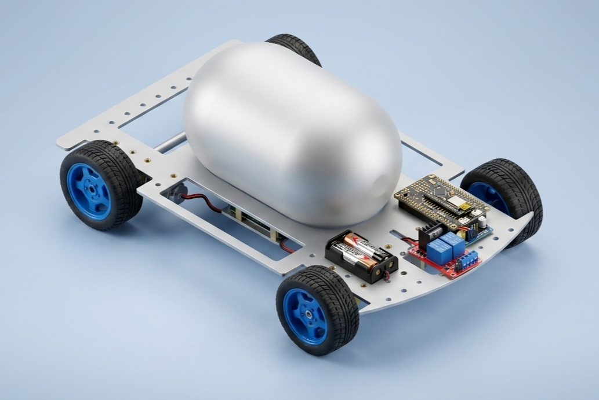
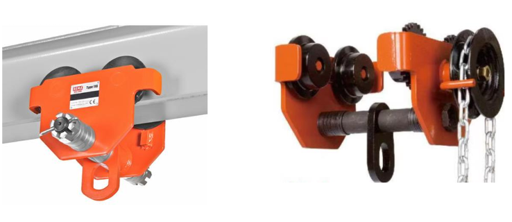
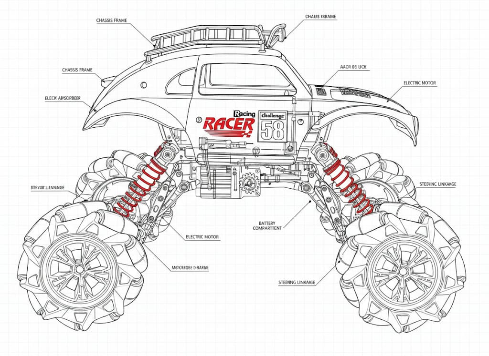
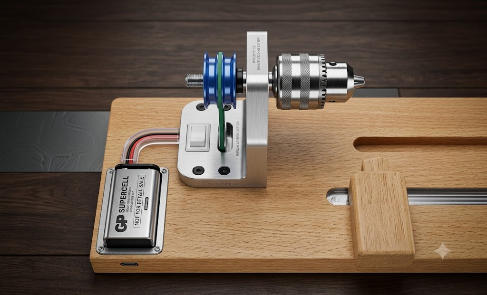
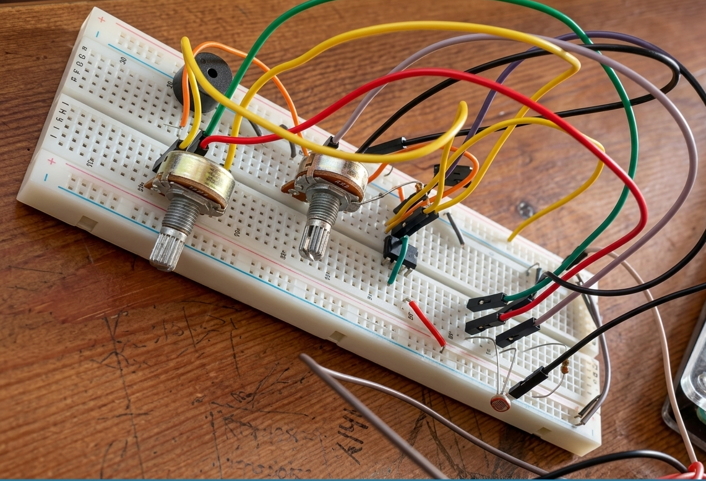
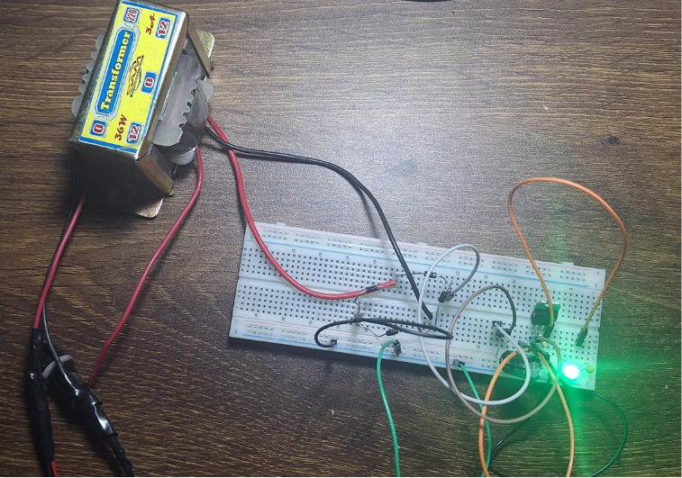
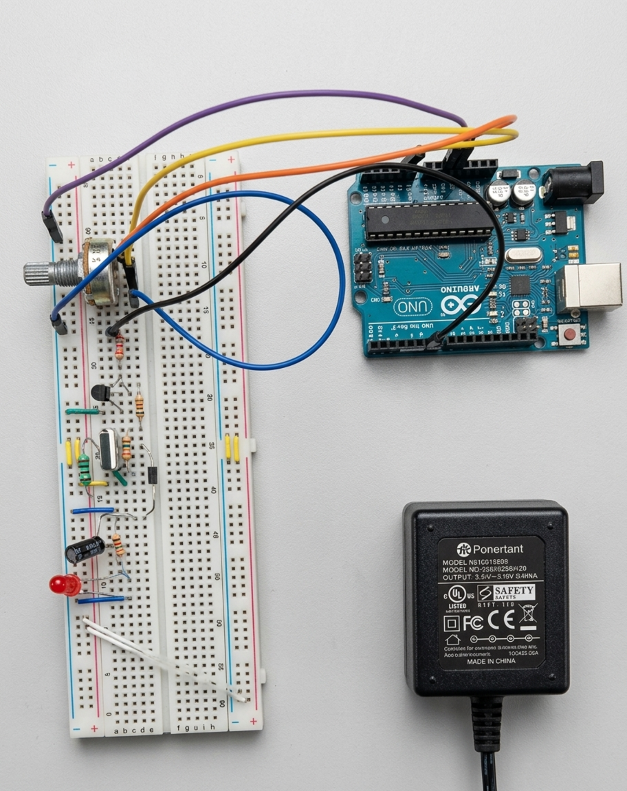

Ahmad Hatem
I’m a third-year Mechatronics Engineering student pursuing a dual degree at the University of East London and Ain Shams University, specializing in Robotics and Artificial Intelligence.
Featured below is a comprehensive technical overview of my engineering projects across robotics, mechanical design, embedded systems, electronics, and programming. Each includes detailed documentation, 3D models, mechanical designs, circuit diagrams and code repositories
Technical Projects
Explore full-cycle builds grouped by specialized engineering sectors.
Delta Robot
MAR 2026 – MAY 2026
Designed, manufactured and controlled a 3-DOF Delta Robot, for the first time building a robot with that level of complexity. It was not only about how to control its 3 connected legs, the real challenge was to build it with 2 stepper motors and 1 dc motor for the last leg.
Ecobee (Garbage thrower)
FEB 2026 – JUN 2026
Designed, manufactured and controlled a 3-DOF Delta Robot, for the first time building a robot with that level of complexity. It was not only about how to control its 3 connected legs, the real challenge was to build it with 2 stepper motors and 1 dc motor for the last leg.
6-DOF Robotic Manipulator
OCT 2025 – JAN 2026
Designed, simulated, and physically integrated a 6-DOF robotic manipulator (4-DOF arm + 2-DOF independently actuated gripper). The project bridges the gap between digital twin simulation and real-world micro-ROS hardware actuation.
Factory Cartesian Robot
SEP 2025 – JAN 2026
This project presents an automated classification and handling system designed to sort two different components, lids and bases, using non-contact optical height detection and a Cartesian robotic manipulator.
Wild Wheels (Kids Toy)
FEB 2025 – MAY 2025
We designed a hot-wheels-like toy for kids 5-16 years old in which they're able to use an app to control a whole circuit of tracks featuring lifting, sorting and shooting mechanisms.
Door Locker Security System
NOV 2025 – JAN 2026
We built a dual-ECU system using TM4C123 (TivaC) boards that communicate over UART to handle everything from password authentication to motor-controlled door actuation. It features persistent EEPROM storage for passwords and an auto-lock system driven by a potentiometer.
Aluminum Air Powered Car
MAY 2026 – JUL 2026
This project presents the design, manufacturing, and testing of an air-powered vehicle driven solely by compressed air energy. The vehicle utilizes a nozzle-based propulsion system to convert the stored pressure energy in a 3-liter, 10-bar air tank into kinetic energy that generates thrust. The design process includes fluid, mechanical, and electrical subsystems integration, with a focus on maximizing performance, minimizing weight, and ensuring reliable control and braking.
Monorail Trolley Stress Analysis
OCT 2025 – DEC 2025
This project presents the design of a Geared Overhead Monorail Trolley. The work includes the selection and design of its main components such as wheels, axles, shaft, side plates, and the chain drive system. Engineering drawings, material selection, and basic strength calculations are carried out to ensure the trolley can safely carry the specified load while meeting manufacturing requirements
Toy Car Reverse Engineering
OCT 2025 – DEC 2025
This project involves the reverse engineering of a toy car to understand its design and functionality. The process includes disassembly, analysis of components, and reconstruction to identify the manufacturing techniques and materials used.
Turning Machine Mockup
MAY 2024 – JUN 2024
I led a group of 7 colleagues to build a mockup of a turning machine as part of a project to demonstrate our understanding of manufacturing machines, such as milling, drilling, and grinding. We chose the turning machine, which is used to form holes in metal or reshape its dimensions, and constructed it using simple wooden parts and a motor repurposed from an old drill
Laser Alarm Detector Circuit
APR 2025 – JUN 2025
We designed a laser alarm detector uses a focused laser beam and a light sensor to form a tripwire: when the beam is interrupted, the system triggers an alert. It is common in home security, doorway monitoring, and industrial perimeters for intrusion detection.
5V Power Supply
APR 2025 – JUN 2025
This project focuses on designing and building a regulated 5V DC power supply from a 220V AC mains input. Such power supplies are essential in electronics because many components like microcontrollers, sensors, and digital circuits require a constant 5V DC to function properly.
Buck Converter
APR 2025 – JUN 2025
For this project, we creatively designed and build a buck converter which steps down the voltage between different DC levels. The objective is to get a variable lower voltage to power a DC motor, drawing power from a 12V DC source. Arduino Uno is used for the control system which sends out a Pulse Width Modulated (PWM) signal that adjusts the actual output voltage every moment.
Agile Project Management Java Tool
OCT 2025 – JAN 2026
The Agile Project Management System is a Java based application designed to simulate a real-world enterprise Agile environment. The system supports Agile methodology by enabling structured collaboration between different roles such as Stakeholders, ScrumMasters, Developers, and QA Engineers.
Home Library Website
JUN 2026 – PRESENT
Turn scattered books into an organized virtual library. Capture photos, generate indexes, and use them to arrange your physical library.
Technical Skills
Core competencies bridged across mechanical design, embedded software architecture, and high-level control loop algorithms.
Robotics Frameworks
ROS 2 (Humble), MoveIt 2, Gazebo Simulation, RViz2, micro-ROS environment mapping.
Embedded Systems
Microcontrollers (ESP32, Arduino), C/C++ development, firmware optimization, serial protocols (I2C, SPI, UART).
CAD & Mechanical Modeling
SolidWorks (parametric assembly, mesh modification), Autodesk Inventor, URDF/Xacro robot generation.
Software & Controls
Python (GUI engineering), MATLAB / Simulink, Stateflow logic systems development.
Get in touch
Let's Connect
Always open to collaborating on automated systems, robotics research, or core embedded systems positions.
-
Email
ahmadhatemmahmoud@gmail.com -
Socials & Source Code